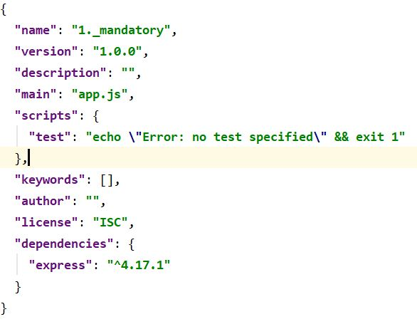

Node.JS
- Er bygget på Chromes V8 javascript engine, så javascript kan køres backend og ikke kun i browseren
- Er synkront/non-blocking - kun én tråd. Læs mere om dette her
- Scope i .js-filer i Node er lokalt (hvorimod javascript i browseren har det globale 'window object')
- For at benytte et script globalt, skal det eksporteres med module.exports og importeres i en anden .js-fil med require()
- Læs mere om moduler her
- Et Node projekt kan bl.a. startes ved - i terminalen - at cd'e til den mappe ens projekt ligger i og skrive npm init -yes
- Herved autogenereres en package.json fil, som indeholder en oversigt over projektets navn, dependencies mv.

- Når et projekt deles med andre (f.eks. på gitHub), deler man ikke den mappe der indeholder alle de modules, projektet bruger - mappen "node_modules" - da den kan fylde meget
- Da alle dependencies er skrevet ind i package.json filen, kan man ved hjælpe af denne installere dem alle ved at skrive npm install i terminalen
- Projektet vil herefter have alle de moduler installeret, som det benytter sig af